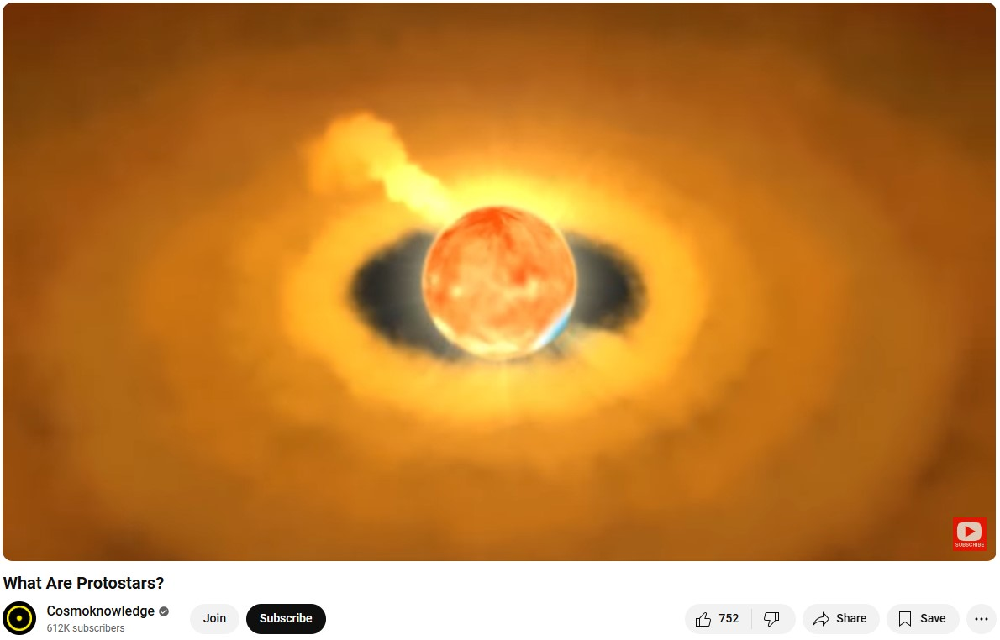
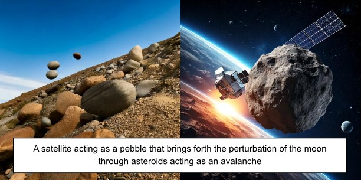

The solar system was believed to be a large interstellar gas and dust cloud, mostly of hydrogen. The cloud collapsed under its own gravity to form a hot compact medium, called a protostar. The collapse consists of a majority of hydrogen, some helium, and a little bit of dust of interstellar grains and silicates. This composition is based on the observation of other star forming regions within the universe and the light scattered or dissected off of these regions. The collapsed region rotates and flattens around a central axis. The dust grains interact and stick together to form larger solid objects which are pre-plantery composites called planetesimals. At some point these planetesimals become massive enough to start capturing the hydrogen and helium from the nebula gas, while the gas core is probably too hot to capture itself. Planetesimals were flung throughout the solar system, constantly accreting and ejecting mass. Some of the smaller bodies were thrown into chaotic orbits.
Now, the solar system is known to be composed of the Sun, eight planets, five dwarf planets, hundreds of moons, thousands of comets, more than a million asteroids.
Asteroids and comets can help identify changes in the differences between planetary evolution and pre-existing solar system conditions.
Within the future, when we have the technology to power higher level space satellites capable of altering the pathways of asteroids into well-calculated trajectories that can do its mover’s bidding. In this sense, perturbing the trajectory of small asteroids can then perturb those of larger asteroids to then perturb the path of moons which themselves affect the properties of planets.
Life as we know it is highly reliant on carbon atoms. This element is immensely important since it is the backbone of organic molecules. Its chemical structure permits it to form long chains of compounds since it can hold four chemical bonds at a time. Hydrocarbons, like most oils, are made entirely of hydrogen and oxygen.
Petroleum is a naturally occurring yellowish-black liquid mixture, consisting mainly of hydrocarbons. Petroleum refers to “naturally occurring unprocessed crude oil” or “refined crude oil”. Crude oil is a smelly, flammable liquid. The word derives from the Latin words of petra and oleum, meaning rock and oil, since it is found in geologically formed rocks .
Gasoline, for example, is a type of petroleum that exhibits amounts of Bezane, among other hydrocarbons, which releases energy as depicted in the following reaction.
Here is a list of hydrocarbons found in Gasoline.
The following process explains how oxygen can be used to combust a hydrocarbon [the most basic example being methane with one carbon and four oxygen atoms] to release energy after the hydrocarbon converts into carbon dioxide and water vapor.
This video explains how to balance the number of oxygens needed to produce this combustion reaction for Benzene.
There are two main theories for the production of Petroleum and oil.
The more accepted theory is that crude oil is a liquid fossil fuel that is found in large underground deposits. Fossil fuels form through heat and pressure applied on the remains of buried plants and animals that lived millions of years ago.
The other process is known as abiotic, meaning that petroleum can be produced independently of biological origin. Early hypotheses were noted by Marcellin Berthelot of how hydrocarbons could be created from the acid dissolution of steel or by the Russian scientist, Mendeleev, claiming that petroleum was created from chemical reactions of water with iron carbides in the upper regions of Earth’s mantle.
Mendeleev’s theory was further advanced upon in the 1950s by Kudryavtsev and other publications, relying on the thermodynamic equilibrium for chemical equilibriums that allows spontaneous formation of methane at high temperatures and pressures, similar to those at Earth’s mantle.
Asteroid samples have portrayed signs of hydrocarbons strengthening the abiotic theory.
Petroleum is projected to be the world’s second largest energy source in 2050. Civilization has been created thanks to energy sources such as petroleum.
In latin, the Moon was called Luna, which is used to describe moon related phenomena, i.e. Lunar cycle.
With a very thin atmosphere, there is no protection from ongoing asteroids, meteoroids, and comets striking its surface. A known one is the Tycho Crater that is more than 52 miles wide. Nearly the entire Moon is covered by a rubble pile of charcoal-gray, powdery dust, and rocky debris.The darker spots are impact basins that were filled with lava.
The radius is 1080 miles, equating to a surface area of roughly 4π(1080)² =14,657,414.7 square miles, which is less than Asia’s 17,212,000 square miles
The leading theory behind how Earth’s moon was formulated can be depicted in Alice Harpole’s video intended for children, which theorizes that the moon originated from the Earth, after a collision of a third party body. Limiting the formation of the moon to such a process, while interesting, is likely incomplete, for which there was probably a much longer and detailed story between these bodies before they settled in this state. Another theory is that the moon was captured after forming somewhere else in the solar system.
Lunar samples collected suggest that the moon is differentiated into different segments, like the Earth is, having higher density materials more concentrated towards the center and lighter density materials closer to the surface. It is hypothesized that its metallic core, about 20% of its diameter, is composed of iron and some nickel. The recorded samples suggest that the moon hosted a magma ocean within it, that chunks of denser mantle minerals such as olivine and pyroxene sank down to the bottom of the magma ocean, and that lighter minerals crystallized to the surface.
Such as the Earth exerts a force that keeps the moon in its orbit through centripetal acceleration, following a circular path, the moon exerts a force on the Earth. These forces are called tidal forces as they squeeze the Earth and portray the phenomenon shaping high tides and low tides through Earth’s water. As the Earth rotates, the same region experiences both types of forces throughout the day [a complete Earth’s rotation] .
Due to forces being weaker the farther away the source, if you were to subtract the average force from the center that directly pulls the entire Earth, the difference of forces portrays the figure to the right where the Earth experiences an outward stretching and squashing. There are friction-like forces that are created from these bulges that slow down Earth’s rotation, heats up the Earth, and stabilizes Earth’s tilt in reference to its rotational axis.
These tidal forces might additionally impact the inner facings of the outer surface of the Earth, generating stresses that may drive the pathways of Earth’s tectonic plates, a concept that describes the Earth’s surface being made up of solid slab plates. This is calculated in detail by J.J. Zanazzi and Amaury H.M.J Triaud in “The ability of significant tidal stress to initiate plate tectonics”. The movement of these tectonic plates can free mature oil and gas from deep within the deposits in the grounds
Mars is the fourth planet from the Sun, right after Earth. Its surface is orange-red as it is covered in iron oxide dust. It reflects a lot of sunlight and appears bright from Earth’s night sky view. Mars’ distance from the Sun is 1.5 times that of the Earth from the Sun. Its mass is 0.107 of that of the Earth and its size is 0.15 of that of the Earth. Mars exceeds Earth's rotational period by less than one hour but orbits the Sun in 1.9 times the time Earth takes to orbit the Sun. Mars’ atmosphere is less than one percent of Earth’s, with Carbon dioxide dominating as its most abundant molecule and constant swarming dust filled with toxic salt. The atmosphere is far less effective in shielding solar radiation. Despite its unwelcoming environment, potential bases for mining resources have been hypothesized. Mars’ surface is a cold radioactive desert.
NASA initiated an official plan named ”Journey to Mars” with a goal to establish an Earth independent base. Ongoing research has established that through resources originating from Mars to produce water and construction materials can be made originating on the planet. This is in line with the discovery of the European Space Agency’s discovery of water ice under the equator and compressing Martian soil into strong solids. These bodies of water could have contained single-celled organisms compressing to deposits of oil. Alternatively, studies suggest the potential of Mars to host primordial hydrocarbons from the initial formations of the planets.
Although there isn’t evidence of current day tectonic plate activity on Mars, there may have been such activity in the past. It is not clear whether the beginning of the insides of Mars’ surface would exhibit enough pressure and heat to currently produce abiotic petroleum if it does exist. A good location to investigate current production of petroleum would be within mountain layers where there are intense pressures exerted within layers of rock.
Phobos is one of two moons that orbit Mars. It is about 150 times smaller than Earth’s moon, with a radius of 6.9 miles. Its orbital radius is about, 41 times closer to Mars than the Moon to the Earth, centering around 9378km, and its mass is about 0.0000146 percent of the Moon’s mass. Its average density is less than twice the density of water. Since we do not have soil samples of Phobos, we are not certain about much of its specifics. We can mainly make conjectures based If Phobos turns out to be easier to inhabit than Mars, it could be used as a way point for exploring Mars in the future.
Identifying its origin story would mutually elaborate on its composition. The two leading theories for the formation of Phobos are being captured from the outer solar system or being ejected from Mars. Being captured from the outer solar system would entail agreement with the spectral properties observed in D-type bodies in the outer asteroid belt and Trojan asteroid population. This is due to low albedo and red spectrum, meaning that it does not greatly reflect sunlight and is likely composed of materials that glow in a red spectrum color such as organic-rich silicates, carbon, and anhydrous silicates. A capture from the inner solar system would require space weathering to alter the composition of igneous rocks rich in magnesium and iron. Past capture simulations generally performed poorly to replicate the stability of Phobos’ orbit, leading to a bias of belief towards being formed from Mars. This would entail a composition similar to the bulk of Mars which has a mean density of about four times the density of water, with higher densities known to gravitate towards the center of the planets. This theory would still require space weathering to alter the composition of the surface.
The plan is to use Phobos as a tool to directly act on Mars, where altering its orbit can enhance or deter the tidal stresses caused on Mars by Phobos. By directing asteroids towards Phobos, some of them may be captured to then add to Phobos’ mass through aggregation as depicted in the figure. Alternatively if the asteroids are fast enough they can pull Phobos through the force of gravity to alter its orbit around Mars. This will ultimately be done to extract resources such as hydrocarbons from Mars, where a main goal would be to generate enough rocket fuel to legitimize a mission that produces more profit than the associated costs.